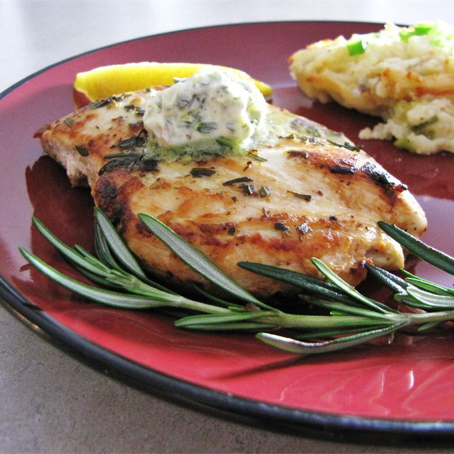

Rosmary Lemon Grilled Chicken

Description
This simple, sensational marinade and sauce for grilled chicken is made with lemon, garlic, rosemary, and butter. Separate
the marinade into thirds: one third for marinating, one third for basting, and one third for topping. This recipe yields six
servings.
Ingredients
- 1/2 cup butter
- 1/2 cup fresh rosemary
- 3 cloves garlic
- 1 lemon, zested
- 1/4 cup fresh lemon juice
- 6 (6 ounce) skinless, boneless chicken breast halves
- salt and pepper to taste
Steps
- In a food processor, blend butter, rosemary, garlic, lemon zest, and lemon juice together. Pour one third of the
blended mixture into a small bowl for marinade. Cover remaining mixture, and set aside.
- Lightly season chicken breasts with salt and pepper. Rub chicken breasts with marinade. Place chicken breasts on a
platter, cover, and refrigerate for three hours.
- Preheat an outdoor grill for high heat and lightly oil the grate. Transfer half of the reserved rosemary and lemon
mixture into a bowl for basting. Cover remaining mixture, and set aside for topping cooked chicken.
- Cook chicken breasts on hot grill, basting with rosemary and lemon basting mixture, about four minutes per side. An
instant-read thermometer inserted into the center should read at least 165 degrees F (74 degrees C). Remove chicken
breasts from the grill, and top with remaining rosemary and lemon mixture.
Home
Source